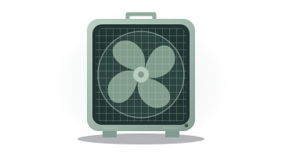
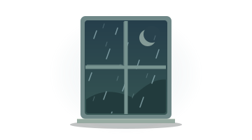
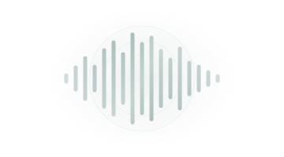
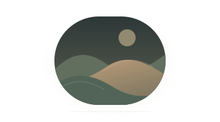

Box fan
A fresh version is ready.
A SMALL, OPEN-SOURCE THING
Still is four comforting sounds and a place to slow down. Free to use, with no ads, accounts, analytics, or subscriptions.
Every sound is prepared as a seamless, lossless loop and checked for gaps and sudden peaks. Playback fades gently in and out. Once you see “Ready offline,” all four sounds are saved on this device.
Background playback depends on your browser and device. Try locking your screen before relying on it overnight. Calls and other audio can interrupt playback; tap play to resume.
The app’s code is MIT licensed. Recordings and original sound assets are CC0, with source credits included.
Made by Ryan L. Melvin · Still 1.0
Whitenoise audio sources and licenses Verified 2026-11-01 The app's code is MIT licensed (see the repository LICENSE). All four bundled audio files are CC0 1.0 Universal. The two third-party recordings below retain their original CC0 provenance. Original generated white and brown noise are also dedicated to the public domain under CC0. Including these assets does not impose a different license on the app's code. Attribution is offered voluntarily. CC0 deed: https://creativecommons.org/publicdomain/zero/1.0/ CC0 legal text: https://creativecommons.org/publicdomain/zero/1.0/legalcode CC0 permits copying, modification, distribution, and commercial use without asking permission. No endorsement by the original artists is implied. box-fan.wav Original title: box_fan Artist: ffdm Source: https://freesound.org/people/ffdm/sounds/824852/ Licensed source preview: https://cdn.freesound.org/previews/824/824852_17819872-hq.mp3 License: CC0 1.0 Universal, as stated on the sound's source page. Recording: Lasko box fan on high speed, recorded with an iPhone 14. Preparation: Used seconds 36–69 of the recording; mono 24 kHz decode, wind-rumble reduction (90 Hz high-pass), 7.5 kHz high-frequency rolloff, 3-second equal-power endpoint overlap, circular smooth RMS leveling, transient gain reduction, smooth peak limiting, normalized to -23 dBFS RMS. The exported PCM16 WAV loop is 30 seconds, with no codec padding or silence. rain.wav Original collection: Rain (loopable) Original file: 4.ogg from Rain OGG.zip Artist: Ylmir Source: https://opengameart.org/content/rain-loopable Download: https://opengameart.org/sites/default/files/Rain%20OGG.zip License: CC0 1.0 Universal, as stated on the source page. Preparation: Used seconds 2–35; mono 24 kHz decode, 90 Hz high-pass, 8.5 kHz high-frequency rolloff, 3-second equal-power endpoint overlap, circular smooth RMS leveling, transient gain reduction, smooth peak limiting, normalized to -23 dBFS RMS. Exported 30-second PCM16 WAV loop. white-noise.wav Original procedural audio generated for this project; no third-party samples. License: CC0 1.0 Universal (public domain dedication). Deterministic seeded broadband noise, smooth RMS and peak control. 30-second mono 24 kHz PCM16 WAV, normalized to -23 dBFS RMS. brown-noise.wav Original procedural audio generated for this project; no third-party samples. License: CC0 1.0 Universal (public domain dedication). Deterministic seeded noise with 1/f amplitude shaping (1/f² power), 40 Hz low-frequency floor, zero DC, and smooth RMS and peak control. 30-second mono 24 kHz PCM16 WAV, normalized to -23 dBFS RMS. Reproduction: scripts/prepare-audio.py Source SHA-256 hashes: reports/audio/source-checksums.json Whole-track and loop-boundary validation: scripts/check-audio.mjs Waveform plots and measurements: reports/audio/
KEEP YOUR QUIET COMFORTABLE
For Still, we recommend a headphone limit of 75 dB or lower, where available. Treat it as a ceiling, not a listening target. For sleep or long sessions, keep actual playback quieter, at the lowest useful level.
Your total exposure matters. The EPA’s environmental-noise guidance recommends an average exposure of 70 dBA over 24 hours, counting all the sounds in your day. A 75 dB headphone limit does not guarantee meeting that average or prevent all hearing damage. Keep playback below the limit, especially for sleep.
This iPhone setting applies to headphone audio. Apple’s level estimates are most accurate with Apple or Beats headphones; other headphones may be estimated from phone volume. Still’s percentage slider cannot measure or guarantee the sound level at your ears.
A LITTLE QUIET, CLOSE BY
Add Still to your home screen to open it like an app.
Keep Still open until “Ready offline” appears to save all four sounds.
Still needs JavaScript to play sounds. Please enable it and reload.